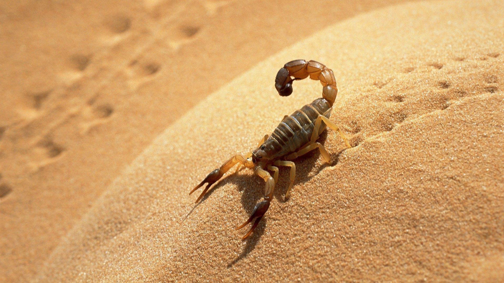

Скорпионы это беспозвоночные животные, пожалуй, самые древние из класса паукообразных. Живут они в Азии и Африке, Америке, Южной Европе и Австралии. Они встречаются в тропических лесах, пустынях и саваннах. Удивительно хорошо переносят любой климат - хоть жара, хоть холод.